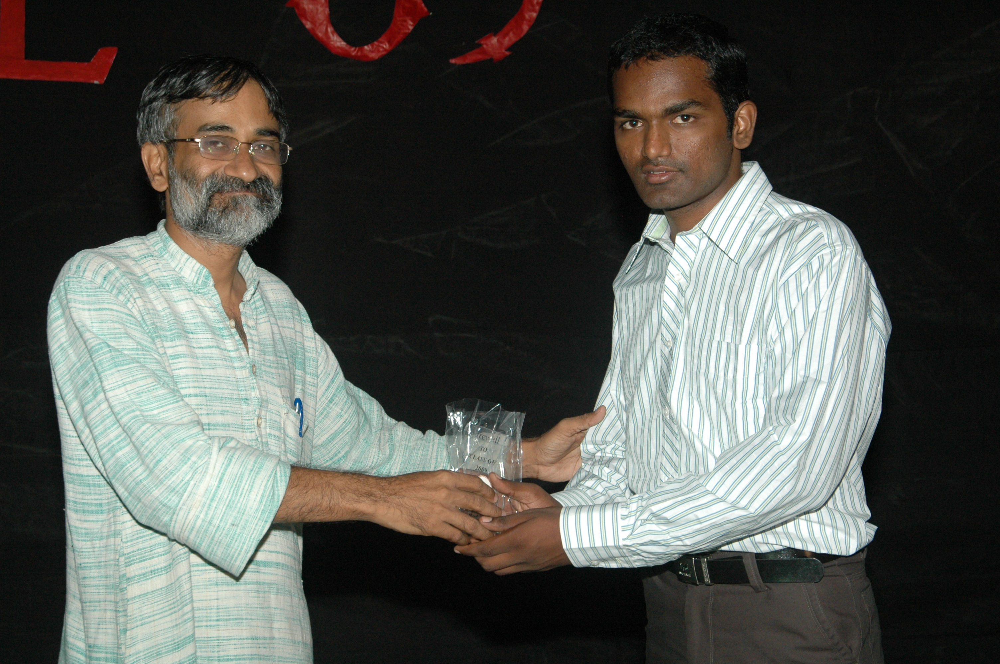

The Yearbook - Commemorating 2005-09!
Raghavendar Reddy's profile information
Name - Raghavendar ReddyBirthday - 14-August 1988
Email - e.raghavendar@gmail.com
Address - 1-69/4,chempapet,saroor nagar,R.R.Dist
Phone - 9966655737
Hobbies - watching movies,reality shows browsing computer games..
Memorabilia - being placed :)
What would you want to be remembered as - just as a "normal" guy
Future Plans - i will update this "tomorrow"
Testimonials written to Raghavendar Reddy
Raghavendar Reddy's Album

Default caption
Testimonials
For valiveti venkata srikanthA bomb shell packed with loads of excitement and enthusiasm.Beware guys it can explode on you
at any moment.Innocence stands out from all the good qualities he have.An ATM to all the OBH guys
Rare to find a guy who is intelligent,hardworking -an allrounder in life but no ego.He is so cool that he never loses his temper
when anyone plays pranks on him .from the last 4 years we have been very close and our daily schedules matches playing games,doing bc,watching movies,
cricket,evening outings etc..but for the exam days.He revises the whole syllabus atleast 4-5 times(quite opposite
to me) ,the kasiest of our wing

panda gadiki pega lo job vachinaka andariki pandage.i will never forget your treat at grand kakatiya

Mama you are perfect and be as you are
All the best for your future and stay in touch
For Bhanukiran Vinzamuri
Bhanu Kiran is both enthusiastic and nervous at same time.He wants to do any work with an 100% perfection .
His planning will also go on those lines.Though we both have differences in opinions in almost all issues,i always want
him to be beside.He complements me in every aspect.From 3rd year we took many courses in common and most interesting part is all my
assignments are done by him.His communication skills are awesome.The emotions potrayed in speeches,poems and
blogs adding to his literary skills make them quite interesting.
A regulor visitor to gym.excercisulu chesi chesi family pack nundi six pack ki maradu
.
He is very very punctual. entha punctual ante 10 mins munde mess ki velli thaluplu koduthuntadu
IIIT lo research chesthu kuda a wannabe Entrepreneur
got a second prize in Bizwit for his product demo
Most of the things in you are quite obvious that i am unable to list it our here
I feel very lucky to find a friend like you.
All the best for ur MS and your startup
For Kiran Neelisetty
He is one guy very closest to me at IIIT.very talkative..kiran gadu matladthunte migitha
vallu listeners ga marpovalsindhe ..veedu entha complex topic ayina arati pandu velchunantha
easy ga cheppesthadu..e decision anna instataneous ga tisukuntadu and will be right in majority of
them.he has really superb reflexes
..A good analyst especially in cricket..sharktv vachaka veedi
commentory chala miss avuthunna
 .. A good all-round player in cricket especially with the tennis ball
.. A good all-round player in cricket especially with the tennis ball
Veedu na lage exams mundu one day batting adhi kuda srinu gadu prasadinchina gyanam ni exams lo rasi
pass markulu techukuntam...orkut lo 10000+ scraps in 1 month,first year lo cgpa 7.8 and second year
lo 5.5 idhi chalu mana vadiki IIIT LAN entha effect chesindo..eppudu room ki vellina 2-3 chat windows open chesi untayi
24X7 ammayilatho chatting or on the phone lo untadu...
I will never forget the satires on bhanu,kothuri and srinu.I love the nicknames u have put them at various times
especially shakleana is awesome dude..weekend parties,shoppin or movies last four years lo ekkadiki vellina veedu
undalsinde
My days at IIIT would not have been so memorable without him..All the pest for your MS raa.
Hope you will go places in future
For Purushotham
purrrrrr....ma IT baba...aa name enduku vachindante emi adigina ok smile padesthadu puttaparthi sai baba range lo.
.veediki kuda oka power undi evari inbox lo naina next mail em vasthundo cheppusthadu
..
he is one of the guys i know him from the very first days of IIIT..intha bindaas character ni ekkada chudaledu..
reyy handwriting pedda ga rasthe ni sommu emi pothundi raa..sanskrit exam ninnu nammukoni d**gi poya(c- vachindi)
linux geek especially ubuntu..has very very innovative mind..always thriving to learn new things..
google search lo manchi specialist..veedini free ga undadam eppudu chudaledu..
edo okati project chesukuntuno lekapothe firefox ki extensions rasukuntuno or telugu novels chaduvukuntuno time [waste] pass chesthuntadu..
veedu telugu literature lo wikipedia..violin vasu priya shishyudu..2 years lone violin nerchukuni mammalni sava de**guthunnadu
ee kalikalam lo intha manchithanam paniki radu raa
.
you are destined to be in a very good company...all the best mama.

Ragrox
For G. Rohit Bharadwaj
I know him from the last six years..he is all rounder in not only cricket
but also in life...he is intelligent and confident.I admire his never say die attitude
 .
.
He is very enthusiastic and participates in all the events..volley ball player,cricketer
and felicity organiser.
veediki chala wide array of areas midha knowledge undi.You can always learn something new when
you are with him.veedilo hidden poet unnadu.I was mesmerized with your poetic skills when you have
given me the four liners you have written in the gowtham college
.
ALl the best for your MS and hope you will go places in future
For Siddardha Maddula
siddhu ga ni gurinchi prathyakanga cheppanavasaram ledu ...kani oka vishayam cheppalanukuntunna..ma siddhu gadu mabbu valla kanna mabbu gadu..anduke CLOUD KING ani peru pettaru.
entha mabbu gadaina helping nature chala ekkuva..very good at gaming.. General knowledge lo thopu ani feel avuthuntadu.
For Satish Chandra Prasad
One of the coolest guy in iiit..I had never seen him losing his temper ..Always has a smile in his face which cheers everyone around him..
emadhya phone lo thega matladesthunnadu...so sidhu niku competion vasthundi jagratha
jokes apart all the best mama for your future..and you are perfect be the same as you are now
For Saaandeepa Phani Srinivas Y
Hats off to the gaming skills of SPSY be it cs or age ..he is one of the only few guys who is still continue the age game at iiit .... kanapinchataniki chala cool kani looks are deceptive..counterlu veyatam lo specialist..
I will never forget the games we have played together and also the post-game discussions
For Vikas Reddy
mama manam manam hyderabad mama... manam manam sainik school mama.... manam manam chempapet mama
ehe ee testimonials anni lituuu
For anjaneya srinivas
We call him the godfather of our gang.He is one of the only few guys in IIIT who is regular to all the classes.
The major part of my CGPA is becoz of dis guy.His teaching skills are awesome .Without him i would not have passed a single course.He is very stubborn and very deep rooted to his values.The jokes he cracks are really mind "blowing"
 .Watching each and evry telugu movie
.Watching each and evry telugu movie
downloaded without even forwarding is an indication of how much patience he has
.He is the best trouble shooter you can have on your side.Being my wingie for the past four years whenever i have trouble i just yell "srinu" and he will apparate before me for my rescue.He is a hardcore gamer but only play against bots.We will be mesmerized by some the loop holes he found out in games like EA cricket and FIFA .In my book of four years of IIIT he will be in every page of it.
GODFATHER srinu aka anjaneya ZINDABAD!!!

{kind=link}